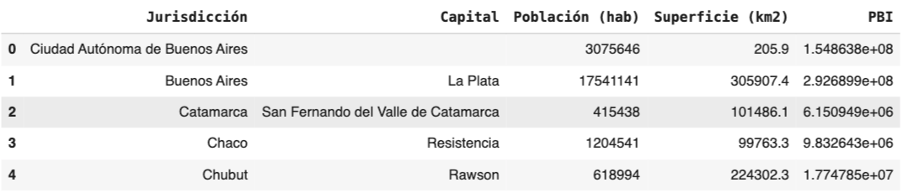
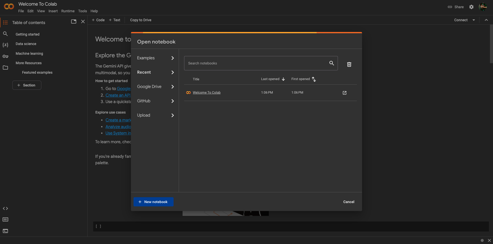
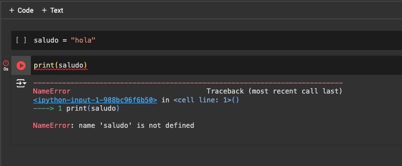
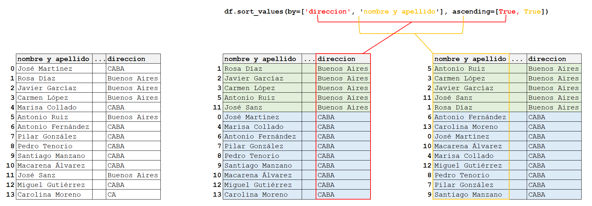

import numpy as np6 Bibliotecas de Python
6.1 Introducción
Python es un lenguaje de programación muy popular, poderoso y versátil que cuenta con una amplia gama de bibliotecas que ayudan a que la programación sea más fácil y eficiente. Pero, ¿qué son las bibliotecas? La bibliotecas son conjuntos de módulos que contienen funciones, clases y variables relacionadas, que permiten realizar tareas sin tener que escribir el código desde cero y este se puede reutilizar en múltiples programas y proyectos.
Entre las bibliotecas disponibles se encuentran las estándares, que se incluye con cada instalación de Python, y las de código abierto creadas por la gran comunidad de desarrolladores, que constantemente genera nuevas bibliotecas y mejora las existentes. Por ello es aconsejable que, al momento de utilizarlas, se verifique si existe alguna actualización en las guías de usuario.
Asimismo, estas bibliotecas se pueden clasificar según su aplicación y funcionalidad en: procesamiento de datos, visualización, aprendizaje automático, desarrollo web, procesamiento de lenguaje y de imágenes, entre otras. En este capítulo se analizarán tres de las bibliotecas más reconocidas y ampliamente utilizadas de Python: NumPy y Pandas para procesamiento de datos y Matplotlib, para visualización.
6.1.1 ¿Cómo se utilizan las bibliotecas?
Para acceder a una biblioteca y sus funciones, se debe instalar por única vez y luego, importar cada vez que la necesitemos.
En la parte superior de nuestro código debemos correr import {nombre_de_biblioteca} as {nombre_corto_de_biblioteca}. El alias o nombre corto de la biblioteca se suele agregar para lograr una mayor legilibilidad del código, pero no es mandatorio.
import numpy as np
Note
En nuestro caso, la instalación no es necesaria ya que vamos a utilizar Google Colab o Replit, pero en caso de usar otro IDE (como por ejemplo, Visual Studio Code), se realiza desde el símbolo del sistema (o en inglés: “Command Prompt”, o terminal o consola), corriendo: pip install –nombre_de_biblioteca.
6.2 NumPy
NumPy es una biblioteca de código abierto muy utilizada en el campo de la ciencia y la ingeniería. Permite trabajar con datos numéricos, matrices multidimensionales, funciones matemáticas y estadísticas avanzadas.
Como ya se mencionó anteriormente, para utilizarse se debe instalar e importar. Por convención, se suele importar como:
NumPy incorpora una estructura de datos propia llamados arrays que es similar a la lista de Python, pero puede almacenar y operar con datos de manera mucho más eficiente: el procesamiento de los arrays es hasta 50 veces más rápido. Esta diferencia de velocidad se debe, en parte, a que los arrays contienen datos homogéneos, a diferencia de las listas que pueden contener distintos tipos de datos dentro.
6.2.1 Arrays
Un array es un conjunto de elementos del mismo tipo, donde cada uno de ellos posee una posición y esta es única para cada elemento. Como dijimos arriba, en Python vimos las listas, que es lo más parecido a un Array.
Analicemos el siguiente ejemplo: si pensamos en una matriz, lo primero que nos viene a la mente es una tabla con valores ordenados en filas y columnas, donde una fila es la línea horizontal y una columna es la vertical. Es decir, una matriz es un conjunto de elementos que posee una posición o índice determinado determinado por la fila y la columna, por lo que sería un array.
En este capítulo se trabajará principalmente con vectores y matrices ya que consideramos que les será útil para aplicar los conocimientos de Numpy en otras materias.
6.2.1.1 Creación de un Array
Un array se crea usando la función array() a partir de listas o tuplas. Por ejemplo:
a = np.array([1, 2, 3])
print(a)[1 2 3]También, se pueden crear arrays particulares, constituídos por ceros con zeros() o por unos con ones():
# Creo un array de ceros con dos elementos
a_ceros = np.zeros(2)
print(a_ceros)[0. 0.]# Creo un array de unos con dos elementos
a_unos = np.ones(2)
print(a_unos)[1. 1.]Además, se pueden crear arrays con un rango de números, utilizando arange() o linspace():
# Creo un array con un rango que empieza en 2 hasta 9 y va de 2 en 2.
a_rango = np.arange(2, 9, 2)
print(a_rango)[2 4 6 8]# Creo un array con un rango formado por 4 números
# que empieza en 2 hasta 10 (incluídos).
a_rango_2 = np.linspace(2, 10, num=4)
print(a_rango_2)[ 2. 4.66666667 7.33333333 10. ]Esto es muy parecido a los rangos que ya vimos en Python, con la sutil diferencia de que el final del rango en este caso sí se icnluye.
Finalmente, para crear arrays de más dimensiones, se utilizan varias listas:
matriz = np.array([[1, 2, 3], [4, 5, 6]])
print(matriz)[[1 2 3]
[4 5 6]]6.2.1.2 Atributos de un array
6.2.1.3 Dimensión
Para caracterizar un array es necesario conocer sus dimensiones, utilizando ndim. De esta forma, se puede confirmar que el array llamado matriz, definido anteriormente, es bidimensional:
# Número de ejes o dimensiones de la matriz
matriz.ndim26.2.1.4 Forma
Otra característica de interés es su forma o shape: para las matrices bidimensionales, se muestra una tupla (n, m) con el número de filas n y de columnas m:
# (n = filas, m = columnas)
matriz.shape(2, 3)6.2.1.5 Tamaño
El tamaño de un array es el número total de elementos que contiene, y se obtiene con size:
# Número total de elementos de la matriz: 2 filas x 3 columnas = 6 elementos
matriz.size66.2.1.6 Posiciones
Al elemento de una matriz A que se encuentra en la fila i-ésima y la columna j-ésima se llama \(a_{ij}\). Así, para acceder a un elemento de un array se debe indicar primero la posición de la fila y luego, de la columna:
print('Elemento de la primera fila y segunda columna: ', matriz[0, 1])Elemento de la primera fila y segunda columna: 2Nótese la diferencia con las matrices (listas de listas) de Python, donde se accedía a un elemento por separado, primero a la fila y luego a la columna: matriz[0][1].
También se puede elegir un rango de elementos en una fila o columna particular:
print('Los elementos de la primera fila, columnas 0 y 1: ', matriz[0, 0:2])Los elementos de la primera fila, columnas 0 y 1: [1 2]print('Los elementos de la segunda columna, filas 0 y 1: ', matriz[0:2, 1])Los elementos de la segunda columna, filas 0 y 1: [2 5]6.2.1.7 Modificar arrays
De forma similar a lo aprendido con las listas de Python, se pueden modificar los arrays utilizando ciertas funciones. Para entender y aplicar las mismas, definamos un vector llamado a:
a = np.array([2, 1, 5, 3, 7, 4, 6, 8])
print(a)[2 1 5 3 7 4 6 8]6.2.1.7.1 Reshape
A este vector, se le puede modificar la forma: pasando de ser (8,) a (4,2), por dar un ejemplo:
a_reshape = a.reshape(2, 4) # 2 filas y 4 columnas
print(a_reshape)[[2 1 5 3]
[7 4 6 8]]6.2.1.7.2 Insert
También, se modría insertar una fila (axis = 0) o una columna (axis = 1) en una determinada posición. Por ejemplo:
# Agregar fila de cincos en posición 1:
print(np.insert(a_reshape, 1, 5, axis=0))[[2 1 5 3]
[5 5 5 5]
[7 4 6 8]]A la función insert(), se le debe indicar:
- El array que se desea modificar
- La posición de la fila o columna que se desea agregar
- Los valores a insertar. ¡Ojo con las dimensiones! Para el ejemplo anterior, a_reshape tenía 2 filas, por lo que se debe agregar una columna con 2 elementos o una fila con 4.
- El eje que se agrega: una fila (axis = 0) o una columna (axis = 1)
# Agregar columna de cincos en posición 1:
print(np.insert(a_reshape, 1, 5, axis=1))[[2 5 1 5 3]
[7 5 4 6 8]]O lo que es equivalente:
# Agregar columna de cincos en posición 1:
print(np.insert(a_reshape, 1, [5, 5], axis=1))[[2 5 1 5 3]
[7 5 4 6 8]]6.2.1.7.3 Append y Delete
También podríamos agregar una fila o una columna utilizando append() al final, como ocurría con las listas:
# Agregar una última fila
a_modificada = np.append(a_reshape, [[1, 2, 3, 4]], axis=0)
print(a_modificada)[[2 1 5 3]
[7 4 6 8]
[1 2 3 4]]O eliminarlas con delete()
# Eliminar la fila de la posición 2.
print(np.delete(a_modificada, 2, axis=0))[[2 1 5 3]
[7 4 6 8]]6.2.1.7.4 Concatenate y Sort
Finalmente, podemos concatenar arrays, como los siguientes:
a = np.array([2, 1, 5, 3])
b = np.array([7, 4, 6, 8])
# Concatenar a y b:
c = np.concatenate((a, b))
print(c)[2 1 5 3 7 4 6 8]Y ordenar los elementos de un array como numérico o alfabético, ascendente o descendente.
print(np.sort(c))[1 2 3 4 5 6 7 8]6.2.2 Operaciones aritméticas utilizando array
Como se ha mencionado anteriormente, Numpy tiene un gran potencial para realizar operaciones, muy superior al de las listas de Python. Por ejemplo, si quisieramos sumar dos listas de python necesitaríamos realizar un for:
# Definir listas
a = [2, 1, 5, 3]
b = [7, 4, 6, 8]
c = []
# Sumar el primer elemento de a con el primero de b, el segundo elemento de a con el segundo de b y así sucesivamente
for i in range(len(a)):
c.append(a[i] + b[i])
print(c)[9, 5, 11, 11]Utlizando las funciones de Numpy, esto ya no es más necesario:
# add() para sumar elemento a elemento de a y b
c = np.add(a, b)
print(c)[ 9 5 11 11]También podemos realizar otras operaciones, como la resta, multiplicación y división. Usar un arreglo dentro de una ecuación nos devuelve otro arreglo, donde cada elemento es el resultado de aplicar la operación a los elementos correspondientes de los arreglos originales.
x = np.array([0, 1, 2, 3, 4, 5, 6, 7, 8, 9, 10])
y = 3 * x + 2
print(y)[ 2 5 8 11 14 17 20 23 26 29 32]De esta forma, podemos realizar operaciones aritméticas con arrays de Numpy de forma muy sencilla y rápida. Antes, en Python, para realizar estas operaciones debíamos recurrir a un ciclo for o a el uso de map. Numpy se ocupa de ahorrarnos el trabajo y calcular, para cada elemento del array, el resultado.
Además, tenemos operaciones básicas que vienen predefinidas por Numpy. Las vamos a ver a continuación.
6.2.2.1 Operaciones básicas:
A continuación se muestra una lista con las operaciones básicas junto con sus operadores asociados, funciones y ejemplos.
| Operación | Operador | Función |
|---|---|---|
| Suma | + |
add() |
| Resta | - |
subtract() |
| Multiplicación | * |
multiply() |
| División | / |
divide() |
| Potencia | ** |
power() |
Definimos los vectores a y b con los que operaremos y veremos ejemplos:
a = np.array([1, 3, 5, 7])
b = np.array([1, 1, 2, 2])- Suma:
resultado_1 = a + b
print("Suma usando +:", resultado_1)
resultado_2 = np.add(a, b)
print("Suma usando add():", resultado_2) Suma usando +: [2 4 7 9]
Suma usando add(): [2 4 7 9]- Resta:
resultado_1 = a - b
print("Resta usando -:", resultado_1)
resultado_2 = np.subtract(a, b)
print("Resta usando subtract():", resultado_2) Resta usando -: [0 2 3 5]
Resta usando subtract(): [0 2 3 5]- Multiplicación:
resultado_1 = a * b
print("Multiplicación usando *:", resultado_1)
resultado_2 = np.multiply(a, b)
print("Multiplicación usando multiply():", resultado_2) Multiplicación usando *: [ 1 3 10 14]
Multiplicación usando multiply(): [ 1 3 10 14]- División:
resultado_1 = a / b
print("División usando /:", resultado_1)
resultado_2 = np.divide(a, b)
print("División usando divide():", resultado_2) División usando /: [1. 3. 2.5 3.5]
División usando divide(): [1. 3. 2.5 3.5]- Potencia:
resultado_1 = a ** b
print("Potencia usando **:", resultado_1)
resultado_2 = np.power(a, b)
print("Potencia usando power():", resultado_2) Potencia usando **: [ 1 3 25 49]
Potencia usando power(): [ 1 3 25 49]
Note
Note que si quisieramos operar con un vector b de elementos iguales, podríamos utilizar un escalar.
b = np.array([2, 2, 2, 2])
resultado_1 = a * b
print("Usando un vector b = [2, 2, 2, 2]:", resultado_1)
resultado_2 = a * 2
print("Usando un escalar b = 2:", resultado_2) Usando un vector b = [2, 2, 2, 2]: [ 2 6 10 14]
Usando un escalar b = 2: [ 2 6 10 14]6.2.2.2 Logaritmo:
NumPy provee funciones para los logaritmos de base 2, 10 y e:
| Base | Función |
|---|---|
| 2 | log2() |
| 10 | log10() |
| e | log() |
Por ejemplo:
# Ejemplo log2()
print("Logaritmo base 2:", np.log2([2, 4, 8, 16]))
# Ejemplo log10()
print("Logaritmo base 10:", np.log10([10, 100, 1000, 10000]))
# Ejemplo log()
print("Logaritmo base e:", np.log([1, np.e, np.e**2]))Logaritmo base 2: [1. 2. 3. 4.]
Logaritmo base 10: [1. 2. 3. 4.]
Logaritmo base e: [0. 1. 2.]
Note
Note que el número de Euler o número e es una constante incluída en NumPy como: np.e
np.e2.7182818284590456.2.2.3 Funciones trigonométricas:
A continuación, una lista con las funciones trigonométricas más utilizadas, que toman los valores en radianes:
| Función trigonométrica | Función |
|---|---|
| seno | sin() |
| coseno | cos() |
| tangente | tan() |
| arcoseno | arcsin() |
| arcocoseno | arccos() |
| arcotangente | arctan() |
Por ejemplo:
# Ejemplo de seno
print("Seno de π / 2:", np.sin(np.pi / 2))
# Ejemplo de arcoseno
print(np.arcsin(1))Seno de π / 2: 1.0
1.5707963267948966# Ejemplo de coseno
print("Coseno de π:", np.cos(np.pi))
# Ejemplo de arcocoseno
print("Arcoseno de -1:", np.arccos(-1))Coseno de π: -1.0
Arcoseno de -1: 3.141592653589793# Ejemplo de tangente:
print("Tangente de 0:", np.tan(0))
# Ejemplo de arcotangente:
print("Arcotangente de 0:", np.arctan(0))Tangente de 0: 0.0
Arcotangente de 0: 0.0
Note
Note que el número π es una constante incluída en NumPy como: np.pi
np.pi3.141592653589793Para convertir los radianes a grados y viceversa, se utiliza deg2rad() y rad2deg() respectivamente:
print("De grados [90, 180, 270, 360] a radianes:",
np.deg2rad([90, 180, 270, 360]))
print("De radianes [π/2, π, 1.5*π, 2*π] a grados:",
np.rad2deg([np.pi/2, np.pi, 1.5*np.pi, 2*np.pi]))De grados [90, 180, 270, 360] a radianes: [1.57079633 3.14159265 4.71238898 6.28318531]
De radianes [π/2, π, 1.5*π, 2*π] a grados: [ 90. 180. 270. 360.]6.2.2.4 Operaciones con matrices:
A continuación, una lista con las operaciones que les pueden ser de interés mientras estudian álgebra matricial:
| Función | Descripción | Comentario |
|---|---|---|
dot() |
Producto escalar | Se utiliza para obtener el producto escalar entre dos vectores. El resultado es un número. |
dot() |
Producto vectorial | También se utiliza para multiplicar matrices. El resultado es una matriz |
transpose() |
Traspuesta | Cambia las filas por las columnas y viceversa |
linalg.inv() |
Inversa | Inversa de una matriz |
linalg.det() |
Determinante | Determinante de una matriz |
eye() |
Matriz identidad | Matriz cuadrada con unos en la diagonal principal y ceros en el resto |
Definimos los arreglos 1 y 2, y matrices 1 y 2 con los que operaremos y veremos ejemplos:
# Crear arreglos
arreglo_1 = np.array([1, 2])
arreglo_2 = np.array([3, 4])
# Crear matrices
matriz_1 = np.array([[1, 3], [5, 7]])
matriz_2 = np.array([[2, 6], [4, 8]])print("Producto escalar entre el array 1 y 2: \n", np.dot(arreglo_1, arreglo_2))Producto escalar entre el array 1 y 2:
11print("Producto vectorial entre la matriz 1 y 2: \n", np.dot(matriz_1, matriz_2))Producto vectorial entre la matriz 1 y 2:
[[14 30]
[38 86]]print("Traspuesta de la matriz 1: \n", np.transpose(matriz_1))Traspuesta de la matriz 1:
[[1 5]
[3 7]]print("Inversa de la matriz 1: \n", np.linalg.inv(matriz_1))Inversa de la matriz 1:
[[-0.875 0.375]
[ 0.625 -0.125]]print("Determinante de la matriz 1: \n", np.linalg.det(matriz_1))Determinante de la matriz 1:
-7.999999999999998
Note
Note que así como existen constantes numéricas, existen las matrices particulares como las compuestas por ceros np.zeros(), por unos np.ones() y la matriz identidad np.eyes.
print("Matriz de identidad de 3x3: \n", np.eye(3))Matriz de identidad de 3x3:
[[1. 0. 0.]
[0. 1. 0.]
[0. 0. 1.]]6.2.2.5 Más operaciones útiles:
| Operaciones | Función | Descripción |
|---|---|---|
| Máximo | max() |
Valor máximo del array o del eje indicado |
| Mínimo | min() |
Valor mínimo del array o del eje indicado |
| Suma | sum() |
Suma de todos los elementos o del eje indicado |
| Promedio | mean() |
Promedio de todos los elementos o del eje indicado |
Utilizando la matriz data como ejemplo:
data = np.array([[1, 2], [5, 3], [4, 6]])- Valor máximo
print("Valor máximo de todo el array: ", data.max())
print("Valores máximos de cada columna: ", data.max(axis=0))Valor máximo de todo el array: 6
Valores máximos de cada columna: [5 6]- Valor mínimo
print("Valor mínimo de todo el array: ", data.min())
print("Valores mínimos de cada fila: ", data.min(axis=1))Valor mínimo de todo el array: 1
Valores mínimos de cada fila: [1 3 4]- Suma de elementos:
print("Suma de todos los elementos del array: ", data.sum())
print("Suma de los elementos de cada fila: ", data.sum(axis=1))Suma de todos los elementos del array: 21
Suma de los elementos de cada fila: [ 3 8 10]- Promedio:
print("Promedio de todos los elementos del array: ", data.mean())
print("Promedio de los elementos de cada columna: ", data.mean(axis=0))Promedio de todos los elementos del array: 3.5
Promedio de los elementos de cada columna: [3.33333333 3.66666667]
Note
Numpy te va a ser muy útil cuando curses materias como Análisis Matemático, Álgebra, Física, Estadística, entre otras. Te va a permitir realizar operaciones de manera rápida y eficiente, y te va a ayudar a entender mejor los conceptos.
6.3 Pandas
Pandas es una biblioteca de código abierto diseñada específicamente para la manipulación y el análisis de datos en Python. Es una herramienta poderosa que puede ayudar a los usuarios a limpiar, transformar y analizar datos de una manera rápida y eficiente.
Al igual que Numpy, se debe importar. Por convención:
import pandas as pdLos datos a trabajar en Pandas van a tener, en general, una forma muy similar a las tablas:

Como Pandas es una biblioteca un poco más pesada, no vamos a estar trabajando en Replit, sino que vamos a usar Google Colab.
6.3.1 Cómo usar Google Colab
Al abrir Google Colab por primera vez, vamos a ver lo siguiente:

Vamos entonces a hacer click en “New Notebook”, y se va a abrir un archivo nuevo, con extensión .ipynb (que es la extensión de un archivo del tipo IPython Notebook). Vamos a cambiarle el nombre de ‘Untitled0’ a ‘Unidad_6_pandas’ o el nombre que prefieran.

6.3.1.1 Celdas de Código
Colab es muy similar a Replit, ya que vamos a poder correr código. La diferencia es que Colab se divide en celdas individuales: cada celda es un bloque de código que se puede correr por separado. Para agregar una celda nueva, se hace click en el botón de “+ Code” que aparece en la parte superior izquierda de la celda. Para correr la celda, se hace click en el botón de “play” que aparece a la izquierda de la celda. El output de la celda va a aparecer debajo de la misma.

Si tenemos variables o imports definidos en otra celda y no la ejecutamos, al intentar usarla nos va a dar error. Es importante entonces o correr todas las celdas, o que cada celda tenga la información necesaria para poder correrse de forma independiente. Acá vemos cómo, al querer ejecutar sólo la segunda celda, nos da error porque la variable saludo está definida en la celda anterior (que no se ejecutó).

Las celdas, además, no necesitan del uso de print si la última linea corresponde a un elemento. Entonces, podemos hacer algo así, y aún así ver el contenido de esa variable en el output. Esta es una diferencia con Replit que vamos a ver muy seguido, porque nos permite ver de mejor forma los elementos de Pandas (a diferencia de con el uso de print).

6.3.1.2 Celdas de Texto
Así también como podemos agregar celdas de código, podemos agregar celdas de texto. Para eso, hacemos click en el botón de “+ Text” que aparece en la parte superior izquierda de la celda. Dentro podemos escribir texto con formato e incluso agregar imágenes.

6.3.1.3 Opciones de Celdas
Para reordenar, eliminar o copiar celdas, al seleccionar una celda aparece un menú a la derecha con distintos íconos. Podemos usar estas opciones para realizar estas distintas acciones.

6.3.1.4 Beneficios de usar Google Colab
- Google Colab tiene una mejor interfaz para usar Pandas, mostrando el output en forma de tablas.
- Permite importar datos de Google Drive
- Permite compartir el código con otras personas, de tal forma que todas ellas puedan editar un mismo archivo
- Permite guardar los archivos en Google Drive, con guardado automático de cambios
- Permite exportar el archivo en distintos formatos, como PDF, HTML, etc.
- Permite intercalar código ejecutable con texto explicativo, lo que lo hace ideal para la creación de informes, presentaciones, o tutoriales.
Para lo que queda de la unidad 6, vamos a estar usando Google Colab.
6.3.2 Serie
Pandas incorpora dos estructuras de datos nuevas llamadas: Series y DataFrames.
Una serie es un vector capaz de contener cualquier tipo de dato, como por ejemplo, números enteros o decimales, strings, objetos de Python, etc.
6.3.2.1 Creación de una Serie
Para crearlas, se puede partir de un escalar, una lista, un diccionario, etc., utilizando pd.Serie():
# Crear serie partiendo de una lista:
lista = [1, "a", 3.5]
pd.Series(lista)0 1
1 a
2 3.5
dtype: objectEsto es análogo a lo que se hacía con los arrays de Numpy, pero con la diferencia de que las series de Pandas pueden contener datos de distinto tipo.
Note que se ven dos líneas verticales de datos en el output. A la derecha se observa una columna con los elementos de la lista antes creada, y a la izquierda se encuentra el índice, formado por valores desde 0 a n-1, siendo n la cantidad de elementos. Este índice numérico es el predefinido, que nos muestra la posición de los elementos dentro de la Serie.
También podríamos cambiarlo si quisiéramos. En ese caso, se puede establecer utilizando index.
El índice es de vital importancia ya que permite acceder a los elementos de la serie (muy parecido a cómo las claves nos permiten acceden a los valores de un diccionario). Al elegir índices personalizados, tenemos que tener en cuenta que su longitud debe ser acorde al número de elementos de la Serie. De lo contrario, se mostrará un ValueError.
# Crear serie partiendo de una lista, indicando el índice
pd.Series(lista, index = ["x", "y", "z"])x 1
y a
z 3.5
dtype: objectTambién podemos crear Series utilizando diccionarios, y en ese caso, sus claves (o keys) pasan a formar el índice.
# Crear serie partiendo de un diccionario:
diccionario = {"x": 1, "y": "a", "z": 3.5}
a = pd.Series(diccionario)
ax 1
y a
z 3.5
dtype: object6.3.2.2 Accediendo a un elemento
Como ya se debe estar imaginando, para acceder a un elemento de la serie, se debe indicar el valor del índice o la posición entre corchetes. Si el índice no es numérico, podrían ser elementos distintos.
# Acceder al elemento de índice y:
a["y"]'a'# Acceder al elemento de posición 0:
a[0]16.3.2.3 Operaciones con Series
Así como pasaba con los arrays de NumPy, las Series no requieren recorrer valor por valor en un ciclo for si queremos realizar operaraciones. Podemos usar directamente operadores con Series.
Por ejemplo:
a + ax 2
y aa
z 7.0
dtype: objecta * 3x 3
y aaa
z 10.5
dtype: object6.3.3 DataFrame
Un DataFrame es una estructura de datos tabular (bidimensional, en forma de tabla), compuesta por filas y columnas, que se parece mucho a una hoja de cálculo de Excel.
6.3.3.1 Creando DataFrames
Para crearlos, se utiliza DataFrame() y se ingresan diferentes estructuras como arrays, diccionarios, listas, series u otros dataframes.
En el siguiente ejemplo, se crea un Dataframe partiendo de un diccionario llamado data para las columnas y de una lista label para el índice:
data = {'columna_1': ['a', 'b', 'c', 'd', 'e', 'f'],
'columna_2': [2.5, 3, 0.5, None, 5, None],
'columna_3': [1, 3, 2, 3, 2, 3]}
labels = ['a1', 'a2', 'a3', 'a4', 'a5', 'a6']
df = pd.DataFrame(data, index=labels)
df| columna_1 | columna_2 | columna_3 | |
|---|---|---|---|
| a1 | a | 2.5 | 1 |
| a2 | b | 3.0 | 3 |
| a3 | c | 0.5 | 2 |
| a4 | d | NaN | 3 |
| a5 | e | 5.0 | 2 |
| a6 | f | NaN | 3 |
Lo que vemos acá es el output de ejecutar el código de arriba en una celda: una tabla donde tenemos 3 columnas, y el índice de cada fila son los elementos de la lista labels.
En vez de tener un valor None, Pandas lo recibe y lo transforma en NaN, que significa “Not a Number”. Esto es muy útil para trabajar con datos faltantes, ya que Pandas nos permite realizar operaciones con ellos sin que nos de error (a diferencia de Python).
6.3.3.2 Atributos y descripción de un Dataframe
A continuación, se observa una tabla con métodos que nos permiten conocer las características de un determinado DataFrame.
| Método o atributo | Descripción |
|---|---|
.info() |
Resume la información del DataFrame |
.shape |
Devuelve una tupla con el número de filas y columnas |
.size |
Número de elementos |
.columns |
Lista con los nombres de las columnas |
.index |
Lista con los nombres de las filas |
.dtypes |
Serie con los tipos de datos de las columnas |
.head() |
Muestra las primeras filas |
.tail() |
Muestra las últimas filas |
.describe() |
Brinda métricas de las columnas numéricas |
Para ejemplificar los métodos y las funciones de Pandas, usaremos el DataFrame df definido en la siguiente línea de código.
data = {'nombre': ['José Martínez', 'Rosa Díaz', 'Javier Garcíaz', 'Carmen López', 'Marisa Collado', 'Antonio Ruiz', 'Antonio Fernández',
'Pilar González', 'Pedro Tenorio', 'Santiago Manzano', 'Macarena Álvarez', 'José Sanz', 'Miguel Gutiérrez', 'Carolina Moreno'],
'edad': [18, 32, 24, 35, 46, 68, 51, 22, 35, 46, 53, 58, 27, 20],
'genero': ['H', 'M', 'H', 'M', 'X', 'H', 'H', 'M', 'H', 'X', 'M', 'H', 'H', 'M'],
'peso': [85.0, 65.0, None, 65.0, 51.0, 66.0, 62.0, 60.0, 90.0, 75.0, 55.0, 78.0, 109.0, 61.0],
'altura': [1.79, 1.73, 1.81, 1.7, 1.58, 1.74, 1.72, 1.66, 1.94, 1.85, 1.62, 1.87, 1.98, 1.77],
'colesterol': [182.0, 232.0, 191.0, 200.0, 148.0, 249.0, 276.0, None, 241.0, 280.0, 262.0, 198.0, 210.0, 194.0]}
df = pd.DataFrame(data)
df| nombre | edad | genero | peso | altura | colesterol | |
|---|---|---|---|---|---|---|
| 0 | José Martínez | 18 | H | 85.0 | 1.79 | 182.0 |
| 1 | Rosa Díaz | 32 | M | 65.0 | 1.73 | 232.0 |
| 2 | Javier Garcíaz | 24 | H | NaN | 1.81 | 191.0 |
| 3 | Carmen López | 35 | M | 65.0 | 1.70 | 200.0 |
| 4 | Marisa Collado | 46 | X | 51.0 | 1.58 | 148.0 |
| 5 | Antonio Ruiz | 68 | H | 66.0 | 1.74 | 249.0 |
| 6 | Antonio Fernández | 51 | H | 62.0 | 1.72 | 276.0 |
| 7 | Pilar González | 22 | M | 60.0 | 1.66 | NaN |
| 8 | Pedro Tenorio | 35 | H | 90.0 | 1.94 | 241.0 |
| 9 | Santiago Manzano | 46 | X | 75.0 | 1.85 | 280.0 |
| 10 | Macarena Álvarez | 53 | M | 55.0 | 1.62 | 262.0 |
| 11 | José Sanz | 58 | H | 78.0 | 1.87 | 198.0 |
| 12 | Miguel Gutiérrez | 27 | H | 109.0 | 1.98 | 210.0 |
| 13 | Carolina Moreno | 20 | M | 61.0 | 1.77 | 194.0 |
:::{.callout-note} Muchas veces no vamos a querer modificar el dataframe original, pero sí manipularlo. En ese caso, podemos hacer una copia del dataframe original, de esta forma: df_copy = df.copy() :::
6.3.3.2.1 Info, dtypes, columns e index
Con info() se puede ver:
- el índice en la primera línea, que es un rango de 0 a 13
- el número total de columnas en la segunda línea
- el uso de la memoria en la última
- una tabla con los nombres de las columnas en Column, la cantidad de valores no nulos en Non-Null Count y el tipo de dato en Dtype para cada una de ellas.
df.info()<class 'pandas.core.frame.DataFrame'>
RangeIndex: 14 entries, 0 to 13
Data columns (total 6 columns):
# Column Non-Null Count Dtype
--- ------ -------------- -----
0 nombre 14 non-null object
1 edad 14 non-null int64
2 genero 14 non-null object
3 peso 13 non-null float64
4 altura 14 non-null float64
5 colesterol 13 non-null float64
dtypes: float64(3), int64(1), object(2)
memory usage: 804.0+ bytesNote que utilizando dtypes, columns e index se obtiene parte de esta información:
# Tipo de dato por columna
df.dtypesnombre object
edad int64
genero object
peso float64
altura float64
colesterol float64
dtype: object# Nombre de cada columna
df.columnsIndex(['nombre', 'edad', 'genero', 'peso', 'altura', 'colesterol'], dtype='object')# índice
df.indexRangeIndex(start=0, stop=14, step=1)
6.3.3.2.2 Shape y Size
La forma del DataFrame es de 14 filas y 6 columnas, por lo que contiene 84 elementos.
# Forma del DataFrame (filas, columnas)
df.shape(14, 6)# Número de elementos del DataFrame
df.size84
6.3.3.2.3 Head y Tail
Asimismo, cuando no conocemos un DataFrame, puede ser importante ver las primeras 5 filas con head() o las últimas con tail(). Si se quisiera observar un número determinado, sólo hay que especificarlo, por ejemplo:
# Mostrar las primeras 3 filas.
df.head(3)| nombre | edad | genero | peso | altura | colesterol | |
|---|---|---|---|---|---|---|
| 0 | José Martínez | 18 | H | 85.0 | 1.79 | 182.0 |
| 1 | Rosa Díaz | 32 | M | 65.0 | 1.73 | 232.0 |
| 2 | Javier Garcíaz | 24 | H | NaN | 1.81 | 191.0 |
# Mostrar las últimas 5 filas.
df.tail()| nombre | edad | genero | peso | altura | colesterol | |
|---|---|---|---|---|---|---|
| 9 | Santiago Manzano | 46 | X | 75.0 | 1.85 | 280.0 |
| 10 | Macarena Álvarez | 53 | M | 55.0 | 1.62 | 262.0 |
| 11 | José Sanz | 58 | H | 78.0 | 1.87 | 198.0 |
| 12 | Miguel Gutiérrez | 27 | H | 109.0 | 1.98 | 210.0 |
| 13 | Carolina Moreno | 20 | M | 61.0 | 1.77 | 194.0 |
6.3.3.2.4 Describe
Por otro lado, describe() devuelve un resumen descriptivo de las columnas de valores numéricos, como “edad”, “peso”, “altura” y “colesterol”.
df.describe()| edad | peso | altura | colesterol | |
|---|---|---|---|---|
| count | 14.000000 | 13.000000 | 14.000000 | 13.000000 |
| mean | 38.214286 | 70.923077 | 1.768571 | 220.230769 |
| std | 15.621379 | 16.126901 | 0.115016 | 39.847948 |
| min | 18.000000 | 51.000000 | 1.580000 | 148.000000 |
| 25% | 24.750000 | 61.000000 | 1.705000 | 194.000000 |
| 50% | 35.000000 | 65.000000 | 1.755000 | 210.000000 |
| 75% | 49.750000 | 78.000000 | 1.840000 | 249.000000 |
| max | 68.000000 | 109.000000 | 1.980000 | 280.000000 |
Estas métricas podrían obtenerse de forma puntual (tanto para todo el DataFrame como para sólo una columna) utilizando funciones determinadas, como:
count(): contabiliza los valores no nulosmean(): promediomin(): valor mínimomax(): valor máximo
Por ejemplo:
df.count()nombre 14
edad 14
genero 14
peso 13
altura 14
colesterol 13
dtype: int64df.min()nombre Antonio Fernández
edad 18
genero H
peso 51.0
altura 1.58
colesterol 148.0
dtype: objectdf.max()nombre Santiago Manzano
edad 68
genero X
peso 109.0
altura 1.98
colesterol 280.0
dtype: object6.3.3.3 Accediendo a filas de un DataFrame
Finalmente, como ocurre con las series, para acceder a los elementos de un DataFrame se puede indicar la posición o el nombre de la fila o columna.
Para acceder a una fila en particular, utilizamos iloc[]. Podemos pasarle a iloc un entero, una lista de enteros, un rango de números (que indican las posiciones) o directamente el valor del índice.
# Mostrar la fila de posición 0, usando doble corchete [[]]
# Recibe una lista de elementos a mostrar (que contiene sólo al 0)
df.iloc[[0]]| nombre | edad | genero | peso | altura | colesterol | |
|---|---|---|---|---|---|---|
| 0 | José Martínez | 18 | H | 85.0 | 1.79 | 182.0 |
Si queremos mostrar un rango, lo hacemos así:
# Mostrar las filas de posición 0 y 3, usando doble corchete [[]]
# Recibe una lista de elementos a mostrar
df.iloc[[0, 3]]| nombre | edad | genero | peso | altura | colesterol | |
|---|---|---|---|---|---|---|
| 0 | José Martínez | 18 | H | 85.0 | 1.79 | 182.0 |
| 3 | Carmen López | 35 | M | 65.0 | 1.70 | 200.0 |
# Mostrar las filas de posiciones entre 0 hasta 3 (exclusive)
# Usa slices
df.iloc[:3]| nombre | edad | genero | peso | altura | colesterol | |
|---|---|---|---|---|---|---|
| 0 | José Martínez | 18 | H | 85.0 | 1.79 | 182.0 |
| 1 | Rosa Díaz | 32 | M | 65.0 | 1.73 | 232.0 |
| 2 | Javier Garcíaz | 24 | H | NaN | 1.81 | 191.0 |
# El equivalente a df.iloc[:3] es el uso de head(3)
df.head(3)| nombre | edad | genero | peso | altura | colesterol | |
|---|---|---|---|---|---|---|
| 0 | José Martínez | 18 | H | 85.0 | 1.79 | 182.0 |
| 1 | Rosa Díaz | 32 | M | 65.0 | 1.73 | 232.0 |
| 2 | Javier Garcíaz | 24 | H | NaN | 1.81 | 191.0 |
6.3.3.4 Accediendo a columnas de un DataFrame
A veces no queremos sólo acceder a filas, sino a columnas. Por ejemplo, para calcular sumas, promedios, máximos o mínimos, etc.
Para acceder a una columna se pueden utilizar una lista con los nombres de las columnas que se quieren mostrar: DataFrame[[columna1, columna2]].
# Mostrar la columna "nombre"
df[['nombre']]| nombre | |
|---|---|
| 0 | José Martínez |
| 1 | Rosa Díaz |
| 2 | Javier Garcíaz |
| 3 | Carmen López |
| 4 | Marisa Collado |
| 5 | Antonio Ruiz |
| 6 | Antonio Fernández |
| 7 | Pilar González |
| 8 | Pedro Tenorio |
| 9 | Santiago Manzano |
| 10 | Macarena Álvarez |
| 11 | José Sanz |
| 12 | Miguel Gutiérrez |
| 13 | Carolina Moreno |
# Mostrar más de una columna: "nombre" y "edad":
df[['nombre', 'edad']]| nombre | edad | |
|---|---|---|
| 0 | José Martínez | 18 |
| 1 | Rosa Díaz | 32 |
| 2 | Javier Garcíaz | 24 |
| 3 | Carmen López | 35 |
| 4 | Marisa Collado | 46 |
| 5 | Antonio Ruiz | 68 |
| 6 | Antonio Fernández | 51 |
| 7 | Pilar González | 22 |
| 8 | Pedro Tenorio | 35 |
| 9 | Santiago Manzano | 46 |
| 10 | Macarena Álvarez | 53 |
| 11 | José Sanz | 58 |
| 12 | Miguel Gutiérrez | 27 |
| 13 | Carolina Moreno | 20 |
De esta forma, podríamos hacer algo así:
# calculamos el promedio para los valores de la columna 'edad'
df[['edad']].mean()edad 38.214286
dtype: float646.3.3.5 Modificar un Dataframe
A la hora de modificar un DataFrame, tenemos distintas posibilidades:
- Cambiar la estructura del mismo, como los nombres de las columnas y de los índices,
- Agregar una nueva filas o columna
- Reemplazar un dato en una determinada posición.
A continuación, se enumeran distintos métodos para llevar a cabo estos cambios.
| Método | Descripción |
|---|---|
rename() |
Renombra las columnas |
insert() |
Agrega columnas |
drop() |
Elimina columnas y filas |
loc[fila] |
Agrega una fila en un índice dado |
loc[fila, columna] |
Modifica un valor particular dado un índice y una columna |
map() |
Busca un valor dado en una columna y lo reemplaza |
replace() |
Reemplaza un valor dado en una columna |
6.3.3.5.1 Rename, insert y drop
Para renombrar una columna, se utiliza un diccionario: rename(columns={"nombre_columna": "nuevo_nombre_columna"})
# Reemplazo "nombre" por "nombre y apellido"
df = df.rename(columns={"nombre": "nombre y apellido"})
df.head() # para que veamos el cambio de nombre en la columna| nombre y apellido | edad | genero | peso | altura | colesterol | |
|---|---|---|---|---|---|---|
| 0 | José Martínez | 18 | H | 85.0 | 1.79 | 182.0 |
| 1 | Rosa Díaz | 32 | M | 65.0 | 1.73 | 232.0 |
| 2 | Javier Garcíaz | 24 | H | NaN | 1.81 | 191.0 |
| 3 | Carmen López | 35 | M | 65.0 | 1.70 | 200.0 |
| 4 | Marisa Collado | 46 | X | 51.0 | 1.58 | 148.0 |
Para agregar una nueva columna, existe el método insert(), que requiere indicar la posición de la nueva columna, el nombre de la nueva columna, y los valores de la misma.
Vamos a crear una lista llamada direccion con 14 valores, para cada una de las personas del DataFrame, y luego agregarla en la posición 3:
# Valores de la nueva columna
direccion = ["CABA", "Bs As", "Bs As", "Bs As", "CABA", "Bs As", "CABA", "CABA", "CABA", "CABA", "CABA", "Bs As", "CABA", "CABA"]
# Insertar la columna "direccion" en la posición 3 de columnas:
df.insert(3, "direccion", direccion)
df.head() # para que veamos que la columna nueva se agregó| nombre y apellido | edad | genero | direccion | peso | altura | colesterol | |
|---|---|---|---|---|---|---|---|
| 0 | José Martínez | 18 | H | CABA | 85.0 | 1.79 | 182.0 |
| 1 | Rosa Díaz | 32 | M | Bs As | 65.0 | 1.73 | 232.0 |
| 2 | Javier Garcíaz | 24 | H | Bs As | NaN | 1.81 | 191.0 |
| 3 | Carmen López | 35 | M | Bs As | 65.0 | 1.70 | 200.0 |
| 4 | Marisa Collado | 46 | X | CABA | 51.0 | 1.58 | 148.0 |
Para agregar una nueva columna también podemos hacerlo directamente, como si fuera un diccionario: df['nueva_columna'] = valores.
Por ejemplo, supongamos que queremos ingresar una columna con el índice de masa corporal de las personas., que se calcula de la siguiente manera:
\[IMC = \frac{Peso(kg)}{Altura(m)^2}\]
Esto podemos hacerlo directamente trabajando sobre las columnas, como trabajábamos sobre los arrays de NumPy; y guardando el resultado en una nueva columna llamada “IMC”.
# Crear la columna "IMC"
df["IMC"] = df["peso"] / df["altura"]**2
df.head()| nombre y apellido | edad | genero | direccion | peso | altura | colesterol | IMC | |
|---|---|---|---|---|---|---|---|---|
| 0 | José Martínez | 18 | H | CABA | 85.0 | 1.79 | 182.0 | 26.528510 |
| 1 | Rosa Díaz | 32 | M | Bs As | 65.0 | 1.73 | 232.0 | 21.718066 |
| 2 | Javier Garcíaz | 24 | H | Bs As | NaN | 1.81 | 191.0 | NaN |
| 3 | Carmen López | 35 | M | Bs As | 65.0 | 1.70 | 200.0 | 22.491349 |
| 4 | Marisa Collado | 46 | X | CABA | 51.0 | 1.58 | 148.0 | 20.429418 |
Esto lo que va a hacer es tomar todos los valores de peso y altura de cada fila, calcular el IMC y guardarlo en una nueva columna de la línea, bajo el nombre “IMC”.
De manera similar, se puede crear la columna dni sin utilizar insert(), usando la lista dni:
df_copy = df.copy() # Hacemos una copia, para que no nos afecte el original
dni = [12345678, 23456789, 34567890, 45678901, 56789012, 67890123, 78901234, 89012345, 90123456, 12345678, 23456789, 34567890, 45678901, 56789012]
df_copy["dni"] = dni
df_copy.head()| nombre y apellido | edad | genero | direccion | peso | altura | colesterol | IMC | dni | |
|---|---|---|---|---|---|---|---|---|---|
| 0 | José Martínez | 18 | H | CABA | 85.0 | 1.79 | 182.0 | 26.528510 | 12345678 |
| 1 | Rosa Díaz | 32 | M | Bs As | 65.0 | 1.73 | 232.0 | 21.718066 | 23456789 |
| 2 | Javier Garcíaz | 24 | H | Bs As | NaN | 1.81 | 191.0 | NaN | 34567890 |
| 3 | Carmen López | 35 | M | Bs As | 65.0 | 1.70 | 200.0 | 22.491349 | 45678901 |
| 4 | Marisa Collado | 46 | X | CABA | 51.0 | 1.58 | 148.0 | 20.429418 | 56789012 |
Por lo que vemos que no es indispensable usar insert para poder agregar una nueva columna, pero insert nos permite decir en dónde queremos agregarla.
Para eliminar una fila (axis=0) o columna (axis=1), se utiliza drop():
# Elimino una columna llamada "direccion". También podría hacer: `del df["direccion"]`
df = df.drop('direccion', axis=1) # Elimino la fila 14
df = df.drop(14, axis=0) 6.3.3.6 Insertar filas
Para agregar una nueva fila, se utiliza loc[], que nos pide indicar el índice y los valores de la misma. Para ello, creamos una lista llamada nueva_fila con valores para cada columna del DataFrame.
# Valores de la nueva fila
nueva_fila = ['Carlos Rivas', 30, 'H', "CABA", 70.0, 1.75, 203.0, 22]
# Insertamos al final del DataFrame
len = len(df.index)
df.loc[len] = nueva_fila
df.tail() # Para ver que se agregó al final| nombre y apellido | edad | genero | direccion | peso | altura | colesterol | IMC | |
|---|---|---|---|---|---|---|---|---|
| 10 | Macarena Álvarez | 53 | M | CABA | 55.0 | 1.62 | 262.0 | 20.957171 |
| 11 | José Sanz | 58 | H | Bs As | 78.0 | 1.87 | 198.0 | 22.305471 |
| 12 | Miguel Gutiérrez | 27 | H | CABA | 109.0 | 1.98 | 210.0 | 27.803285 |
| 13 | Carolina Moreno | 20 | M | CABA | 61.0 | 1.77 | 194.0 | 19.470778 |
| 14 | Carlos Rivas | 30 | H | CABA | 70.0 | 1.75 | 203.0 | 22.000000 |
¿Por qué usamos ‘len’ arriba?
A diferencia de Python, podemos agregar una fila en una posición que no existe aún. Por eso arriba pudimos hacer df.loc[len].
6.3.3.7 Modificar un valor
Finalmente, para cambiar un valor determinado también se utiliza loc[], como por ejemplo, agregar el peso de Javier García (tercera fila), que antes tenía NaN:
df.loc[2, 'peso'] = 92
df.head()| nombre y apellido | edad | genero | direccion | peso | altura | colesterol | IMC | |
|---|---|---|---|---|---|---|---|---|
| 0 | José Martínez | 18 | H | CABA | 85.0 | 1.79 | 182.0 | 26.528510 |
| 1 | Rosa Díaz | 32 | M | Bs As | 65.0 | 1.73 | 232.0 | 21.718066 |
| 2 | Javier Garcíaz | 24 | H | Bs As | 92.0 | 1.81 | 191.0 | NaN |
| 3 | Carmen López | 35 | M | Bs As | 65.0 | 1.70 | 200.0 | 22.491349 |
| 4 | Marisa Collado | 46 | X | CABA | 51.0 | 1.58 | 148.0 | 20.429418 |
Para transformar los valores de una columna entera, podemos utilizar map() pasando un diccionario del estilo {valor_viejo: valor_nuevo}. Por ejemplo, modificar la columna “genero” reemplazando “H” por “M”, “M” por “F”:
df['genero'] = df['genero'].map({'H': 'M', 'M': 'F', 'X': 'X'})
df.head()| nombre y apellido | edad | genero | direccion | peso | altura | colesterol | IMC | |
|---|---|---|---|---|---|---|---|---|
| 0 | José Martínez | 18 | M | CABA | 85.0 | 1.79 | 182.0 | 26.528510 |
| 1 | Rosa Díaz | 32 | F | Bs As | 65.0 | 1.73 | 232.0 | 21.718066 |
| 2 | Javier Garcíaz | 24 | M | Bs As | 92.0 | 1.81 | 191.0 | NaN |
| 3 | Carmen López | 35 | F | Bs As | 65.0 | 1.70 | 200.0 | 22.491349 |
| 4 | Marisa Collado | 46 | X | CABA | 51.0 | 1.58 | 148.0 | 20.429418 |
Otra manera sería utilizando replace(). Por ejemplo, en la columna “direccion” vamos a modificar “Bs As” por “Buenos Aires”.
df['direccion'] = df['direccion'].replace('Bs As', 'Buenos Aires')
df.head()| nombre y apellido | edad | genero | direccion | peso | altura | colesterol | IMC | |
|---|---|---|---|---|---|---|---|---|
| 0 | José Martínez | 18 | M | CABA | 85.0 | 1.79 | 182.0 | 26.528510 |
| 1 | Rosa Díaz | 32 | F | Buenos Aires | 65.0 | 1.73 | 232.0 | 21.718066 |
| 2 | Javier Garcíaz | 24 | M | Buenos Aires | 92.0 | 1.81 | 191.0 | NaN |
| 3 | Carmen López | 35 | F | Buenos Aires | 65.0 | 1.70 | 200.0 | 22.491349 |
| 4 | Marisa Collado | 46 | X | CABA | 51.0 | 1.58 | 148.0 | 20.429418 |
6.3.3.8 Filtrar un Dataframe
Para filtrar los elementos de un DataFrame se suelen utilizar condiciones lógicas de la siguiente forma: DataFrame[ condicion ].
Por ejemplo:
# Seleccionar aquellas personas menores de 40 años
# La condición es que la columna 'edad' del dataframe tenga valor menor a 40
df[ df['edad'] < 40 ] | nombre y apellido | edad | genero | direccion | peso | altura | colesterol | IMC | |
|---|---|---|---|---|---|---|---|---|
| 0 | José Martínez | 18 | M | CABA | 85.0 | 1.79 | 182.0 | 26.528510 |
| 1 | Rosa Díaz | 32 | F | Buenos Aires | 65.0 | 1.73 | 232.0 | 21.718066 |
| 2 | Javier Garcíaz | 24 | M | Buenos Aires | 92.0 | 1.81 | 191.0 | NaN |
| 3 | Carmen López | 35 | F | Buenos Aires | 65.0 | 1.70 | 200.0 | 22.491349 |
| 7 | Pilar González | 22 | F | CABA | 60.0 | 1.66 | NaN | 21.773842 |
| 8 | Pedro Tenorio | 35 | M | CABA | 90.0 | 1.94 | 241.0 | 23.913275 |
| 12 | Miguel Gutiérrez | 27 | M | CABA | 109.0 | 1.98 | 210.0 | 27.803285 |
| 13 | Carolina Moreno | 20 | F | CABA | 61.0 | 1.77 | 194.0 | 19.470778 |
| 14 | Carlos Rivas | 30 | M | CABA | 70.0 | 1.75 | 203.0 | 22.000000 |
Cuando se requieren múltiples condiciones, se puede adicionar usando símbolos como & para and y | para or. Por ejemplo:
# Seleccionar aquellas personas de genero femenino y menores de 40 años:
df[ (df['edad'] < 40) & (df['genero'] == 'F') ]| nombre y apellido | edad | genero | direccion | peso | altura | colesterol | IMC | |
|---|---|---|---|---|---|---|---|---|
| 1 | Rosa Díaz | 32 | F | Buenos Aires | 65.0 | 1.73 | 232.0 | 21.718066 |
| 3 | Carmen López | 35 | F | Buenos Aires | 65.0 | 1.70 | 200.0 | 22.491349 |
| 7 | Pilar González | 22 | F | CABA | 60.0 | 1.66 | NaN | 21.773842 |
| 13 | Carolina Moreno | 20 | F | CABA | 61.0 | 1.77 | 194.0 | 19.470778 |
# Seleccionar aquellas personas cuyo peso es 60kg o 90kg:
df[(df['peso'] == 60.0) | (df['peso'] == 90.0)]| nombre y apellido | edad | genero | direccion | peso | altura | colesterol | IMC | |
|---|---|---|---|---|---|---|---|---|
| 7 | Pilar González | 22 | F | CABA | 60.0 | 1.66 | NaN | 21.773842 |
| 8 | Pedro Tenorio | 35 | M | CABA | 90.0 | 1.94 | 241.0 | 23.913275 |
También puedo filtrar las fillas por el valor NaN.
Para eso, se utiliza la función isnull() que devuelve True si el valor de la columna es nulo o NaN. Por ejemplo:
df['IMC'].isnull()0 False
1 False
2 True
3 False
4 False
5 False
6 False
7 False
8 False
9 False
10 False
11 False
12 False
13 False
14 False
Name: IMC, dtype: boolPara visualizar aquellas filas donde el índice de masa corporal es nulo, filtramos:
df[df['IMC'].isnull()]| nombre y apellido | edad | genero | direccion | peso | altura | colesterol | IMC | |
|---|---|---|---|---|---|---|---|---|
| 2 | Javier Garcíaz | 24 | M | Buenos Aires | 92.0 | 1.81 | 191.0 | NaN |
El método opuesto es notnull(), que devuelve True si el valor de la columna no es nulo o NaN. Por ejemplo:
df[df['IMC'].notnull()]| nombre y apellido | edad | genero | direccion | peso | altura | colesterol | IMC | |
|---|---|---|---|---|---|---|---|---|
| 0 | José Martínez | 18 | M | CABA | 85.0 | 1.79 | 182.0 | 26.528510 |
| 1 | Rosa Díaz | 32 | F | Buenos Aires | 65.0 | 1.73 | 232.0 | 21.718066 |
| 3 | Carmen López | 35 | F | Buenos Aires | 65.0 | 1.70 | 200.0 | 22.491349 |
| 4 | Marisa Collado | 46 | X | CABA | 51.0 | 1.58 | 148.0 | 20.429418 |
| 5 | Antonio Ruiz | 68 | M | Buenos Aires | 66.0 | 1.74 | 249.0 | 21.799445 |
| 6 | Antonio Fernández | 51 | M | CABA | 62.0 | 1.72 | 276.0 | 20.957274 |
| 7 | Pilar González | 22 | F | CABA | 60.0 | 1.66 | NaN | 21.773842 |
| 8 | Pedro Tenorio | 35 | M | CABA | 90.0 | 1.94 | 241.0 | 23.913275 |
| 9 | Santiago Manzano | 46 | X | CABA | 75.0 | 1.85 | 280.0 | 21.913806 |
| 10 | Macarena Álvarez | 53 | F | CABA | 55.0 | 1.62 | 262.0 | 20.957171 |
| 11 | José Sanz | 58 | M | Buenos Aires | 78.0 | 1.87 | 198.0 | 22.305471 |
| 12 | Miguel Gutiérrez | 27 | M | CABA | 109.0 | 1.98 | 210.0 | 27.803285 |
| 13 | Carolina Moreno | 20 | F | CABA | 61.0 | 1.77 | 194.0 | 19.470778 |
| 14 | Carlos Rivas | 30 | M | CABA | 70.0 | 1.75 | 203.0 | 22.000000 |
6.3.3.9 Ordenando, Contando y Agrupando
A continuación, se muestra una lista con métodos que resultan muy útiles a la hora de analizar datos:
| Método | Descripción |
|---|---|
sort_values(by, ascending) |
Ordena el DataFrame considerando los valores de la o las columnas determinadas y devuelve un DataFrame nuevo (no modifica el original) |
value_counts() |
Indica los valores únicos de una determinada columna y el número de veces que aparece en ella |
groupby().func() |
Agrupa las filas según ciertos valores de columnas. Requiere que apliquemos una función luego para que ‘agrupe’ los datos. |
6.3.3.9.1 Sort value:
Para utilizar la función sort_values(by, ascending), se debe indicar en el parámetro by una lista con las columnas para ordenar el DataFrame y en ascending, True si el orden deseado es creciente o False para decreciente.
En el siguiente ejemplo ordenamos por “nombre y apellido” en forma alfabética:
df.sort_values(by=['nombre y apellido'], ascending=[True])| nombre y apellido | edad | genero | direccion | peso | altura | colesterol | IMC | |
|---|---|---|---|---|---|---|---|---|
| 6 | Antonio Fernández | 51 | M | CABA | 62.0 | 1.72 | 276.0 | 20.957274 |
| 5 | Antonio Ruiz | 68 | M | Buenos Aires | 66.0 | 1.74 | 249.0 | 21.799445 |
| 14 | Carlos Rivas | 30 | M | CABA | 70.0 | 1.75 | 203.0 | 22.000000 |
| 3 | Carmen López | 35 | F | Buenos Aires | 65.0 | 1.70 | 200.0 | 22.491349 |
| 13 | Carolina Moreno | 20 | F | CABA | 61.0 | 1.77 | 194.0 | 19.470778 |
| 2 | Javier Garcíaz | 24 | M | Buenos Aires | 92.0 | 1.81 | 191.0 | NaN |
| 0 | José Martínez | 18 | M | CABA | 85.0 | 1.79 | 182.0 | 26.528510 |
| 11 | José Sanz | 58 | M | Buenos Aires | 78.0 | 1.87 | 198.0 | 22.305471 |
| 10 | Macarena Álvarez | 53 | F | CABA | 55.0 | 1.62 | 262.0 | 20.957171 |
| 4 | Marisa Collado | 46 | X | CABA | 51.0 | 1.58 | 148.0 | 20.429418 |
| 12 | Miguel Gutiérrez | 27 | M | CABA | 109.0 | 1.98 | 210.0 | 27.803285 |
| 8 | Pedro Tenorio | 35 | M | CABA | 90.0 | 1.94 | 241.0 | 23.913275 |
| 7 | Pilar González | 22 | F | CABA | 60.0 | 1.66 | NaN | 21.773842 |
| 1 | Rosa Díaz | 32 | F | Buenos Aires | 65.0 | 1.73 | 232.0 | 21.718066 |
| 9 | Santiago Manzano | 46 | X | CABA | 75.0 | 1.85 | 280.0 | 21.913806 |
¿Qué ocurre cuando ordenamos siguiendo varias columnas? Los valores del DataFrame se ordenan siguiendo la primera columna en primer lugar, luego la segunda, y así sucesivamente.
df.sort_values(by=['genero', 'nombre y apellido'], ascending=[True, True])| nombre y apellido | edad | genero | direccion | peso | altura | colesterol | IMC | |
|---|---|---|---|---|---|---|---|---|
| 3 | Carmen López | 35 | F | Buenos Aires | 65.0 | 1.70 | 200.0 | 22.491349 |
| 13 | Carolina Moreno | 20 | F | CABA | 61.0 | 1.77 | 194.0 | 19.470778 |
| 10 | Macarena Álvarez | 53 | F | CABA | 55.0 | 1.62 | 262.0 | 20.957171 |
| 7 | Pilar González | 22 | F | CABA | 60.0 | 1.66 | NaN | 21.773842 |
| 1 | Rosa Díaz | 32 | F | Buenos Aires | 65.0 | 1.73 | 232.0 | 21.718066 |
| 6 | Antonio Fernández | 51 | M | CABA | 62.0 | 1.72 | 276.0 | 20.957274 |
| 5 | Antonio Ruiz | 68 | M | Buenos Aires | 66.0 | 1.74 | 249.0 | 21.799445 |
| 14 | Carlos Rivas | 30 | M | CABA | 70.0 | 1.75 | 203.0 | 22.000000 |
| 2 | Javier Garcíaz | 24 | M | Buenos Aires | 92.0 | 1.81 | 191.0 | NaN |
| 0 | José Martínez | 18 | M | CABA | 85.0 | 1.79 | 182.0 | 26.528510 |
| 11 | José Sanz | 58 | M | Buenos Aires | 78.0 | 1.87 | 198.0 | 22.305471 |
| 12 | Miguel Gutiérrez | 27 | M | CABA | 109.0 | 1.98 | 210.0 | 27.803285 |
| 8 | Pedro Tenorio | 35 | M | CABA | 90.0 | 1.94 | 241.0 | 23.913275 |
| 4 | Marisa Collado | 46 | X | CABA | 51.0 | 1.58 | 148.0 | 20.429418 |
| 9 | Santiago Manzano | 46 | X | CABA | 75.0 | 1.85 | 280.0 | 21.913806 |
En el ejemplo de arriba, primero se ordena de manera creciente por genero, resultando en tres grupos: “genero” = “F”, “M” y “X”. Luego, cada uno de esos grupos se ordena por “nombre y apellido” de forma creciente.

6.3.3.9.2 Value Count:
Utilizando value_counts() se pueden contar las filas en cada grupo según “direccion”. Es decir, cuenta cuántas apariciones hay de cada valor en una columna.
df['direccion'].value_counts()CABA 10
Buenos Aires 5
Name: direccion, dtype: int646.3.3.9.3 Group by:
groupby() es un método que nos permite agrupar los datos del DataFrame según los valores de una o unas columnas dadas, tranformándose estas en el nuevo índice de los grupos. Por ejemplo, si quisieramos agrupar por dirección y obtener la cantidad de apariciones de cada valor:
# Agrupar por "direccion" y devolver la cantidad de cada uno
df_copy.groupby(['direccion']).size()direccion
Bs As 5
CABA 9
dtype: int64Obteniendo una tabla con valores agrupados por “direccion”, siendo esta columna el nuevo índice.
# Agrupar por "direccion" y "genero" y mostrar el promedio de las columnas de 'edad' y 'peso'
df.groupby(['direccion', 'genero'])[['edad', 'peso']].mean()| edad | peso | ||
|---|---|---|---|
| direccion | genero | ||
| Buenos Aires | F | 33.500000 | 65.000000 |
| M | 50.000000 | 78.666667 | |
| CABA | F | 31.666667 | 58.666667 |
| M | 32.200000 | 83.200000 | |
| X | 46.000000 | 63.000000 |
También puedo agrupar por más de una columna, y aplicar distintas funciones a las columnas. Por ejemplo, si quisiera agrupar por “direccion” y “genero” y obtener el promedio de la columna “edad” y la suma de la columna “peso”, puedo usar agg, que significa “aggregate” (que significa ‘agregar’) y me pemite, para cada columna, pasarle una función a aplicar:
df.groupby(['direccion', 'genero']).agg({'edad': 'mean', 'peso': 'sum'})| edad | peso | ||
|---|---|---|---|
| direccion | genero | ||
| Buenos Aires | F | 33.500000 | 130.0 |
| M | 50.000000 | 236.0 | |
| CABA | F | 31.666667 | 176.0 |
| M | 32.200000 | 416.0 | |
| X | 46.000000 | 126.0 |
6.3.4 Conclusiones
Pandas nos permite trabajar con datos de una manera muy sencilla y eficiente. Nos permite importar datos de distintas fuentes, limpiarlos, transformarlos y analizarlos. Además, nos permite visualizar los datos de una manera muy amigable, lo que nos va a permitir entender mejor los datos con los que estamos trabajando.